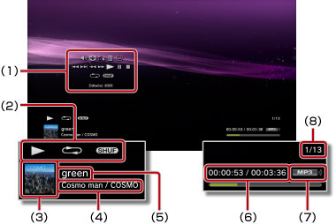

Muzyka > Korzystanie z panelu sterowania
Korzystanie z panelu sterowania
Za pomocą wyświetlanego na ekranie panelu sterowania można wykonywać różne operacje. Panel sterowania można wyświetlać lub ukrywać przez naciśnięcie przycisku  .
.
Regulacja głośności

Umożliwia dostosowanie poziomu głośności odtwarzania zawartości w kategorii  (Muzyka). Można wybrać jeden z dziewięciu poziomów.
(Muzyka). Można wybrać jeden z dziewięciu poziomów.
Wskazówka
Jeśli poziom głośności dźwięku jest za wysoki, dźwięk może być zniekształcony. W takim przypadku należy zmniejszyć poziom głośności dźwięku.
Odtwarzacz wizualny
Umożliwia wybór tła, które będzie wyświetlane podczas odtwarzania zawartości.
Wskazówka
Nie można zmienić tła Odtwarzacza wizualnego podczas wyświetlania zawartości z kategorii  (Zdjęcia) lub programu
(Zdjęcia) lub programu  (Przeglądarka internetowa).
(Przeglądarka internetowa).
Dodaj do listy odtwarzania
Umożliwia dodanie materiałów podlegających odtwarzaniu do listy odtwarzania.
Wskazówka
Do listy można dodawać tylko pliki muzyczne zapisane na dysku twardym.
Usuń
Umożliwia usunięcie materiałów podlegających odtwarzaniu.
Wskazówka
Można usuwać tylko pliki muzyczne zapisane na dysku twardym.
Wyświetl
Umożliwia wyświetlanie stanu i innych informacji podczas odtwarzania. Informacje różnią się w zależności od rodzaju odtwarzanej zawartości.

(1) |
Panel sterowania |
|---|---|
(2) |
Ikona stanu |
(3) |
Ikona utworu |
(4) |
Nazwa wykonawcy / tytuł albumu |
(5) |
Tytuł utworu |
(6) |
Czas od początku utworu / czas całkowity |
(7) |
Kodek |
(8) |
Numer utworu / całkowita liczba utworów |
Poprzedni
Umożliwia powrót do początku bieżącego lub do poprzedniego utworu.
Następny
Umożliwia przejście do początku następnego utworu.
Szybkie przewijanie do tyłu / Szybkie przewijanie do przodu
Umożliwia przewijanie odtwarzanej zawartości do przodu lub do tyłu. Naciśnięcie i przytrzymanie przycisku  powoduje przewijanie zawartości do przodu lub do tyłu do momentu zwolnienia przycisku.
powoduje przewijanie zawartości do przodu lub do tyłu do momentu zwolnienia przycisku.
Odtwórz
Umożliwia rozpoczęcie odtwarzania zawartości.
Wstrzymaj
Umożliwia tymczasowe wstrzymanie odtwarzania.
Zatrzymaj
Umożliwia zatrzymanie odtwarzania.
Powtórz
Umożliwia wielokrotne odtwarzanie zawartości. Można wybrać jeden z trzech trybów powtarzania, naciskając przycisk .
 |
Wielokrotne odtwarzanie jednego elementu zawartości. |
|---|---|
|
Wielokrotne odtwarzanie całej zawartości. |
| Brak ikony | Wyłączenie powtarzania i odtwarzanie całej zawartości w ustalonej kolejności. |
Odtwarzaj losowo
Umożliwia odtwarzanie zawartości w losowej kolejności.